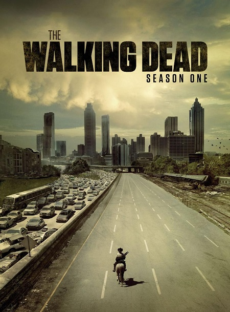
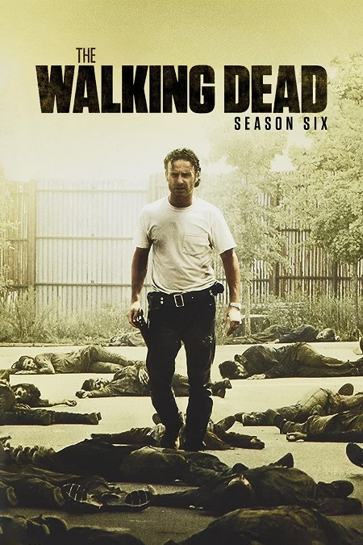
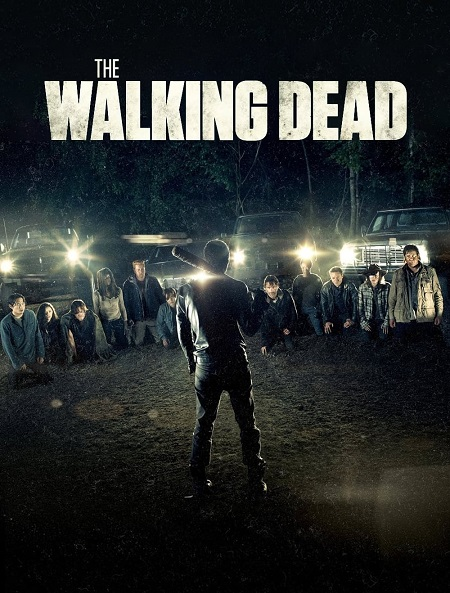

Gallery




×

Immerse yourself in a post-apocalyptic world where survivors struggle to stay alive against the threat of the walking dead
Explore the WorldFormer police officer and leader of the main survivor group. Known for his courage and determination to protect his family and friends.
Skilled hunter and tracker. An isolated character who evolved to become one of the most important and loyal members of the group.
Skilled sword fighter and former lawyer. A strong and wise character who became one of the group's most important leaders.
Former leader of "The Saviors." A charismatic and complex character who transformed from enemy to anticipated ally.
A new spin-off series from The Walking Dead universe has been announced, featuring new characters in a completely different setting.
Read MoreIn an exclusive interview, one of the series stars revealed behind-the-scenes details and special memories from filming the show's final season.
Read MoreAMC network confirmed that The Walking Dead movie is still in development with filming expected to begin soon.
Read MoreThe story begins with Rick Grimes waking from a coma to find himself in a world overrun by the walking dead.
View DetailsThe group moves to Hershel Greene's farm and discovers new secrets about the global pandemic.
View Details
The group settles in an abandoned prison and faces a new threat from the "Woodbury" community led by the Governor.
View DetailsA deadly outbreak spreads through the prison followed by the Governor's attack that leads to the group scattering.
View DetailsThe group escapes Terminus and begins their journey to Alexandria, a new safe community.
View DetailsNew threats to Alexandria and the appearance of "The Saviors" at the end of the season.
View DetailsNegan and The Saviors' rule and the struggle to free the communities from their control.
View DetailsAll-out war against Negan and The Saviors and the alliance of communities.
View DetailsA time jump and building a new community followed by a new threat: The Whisperers.
View Details
The final season - facing The Commonwealth and concluding the series' story.
View Details